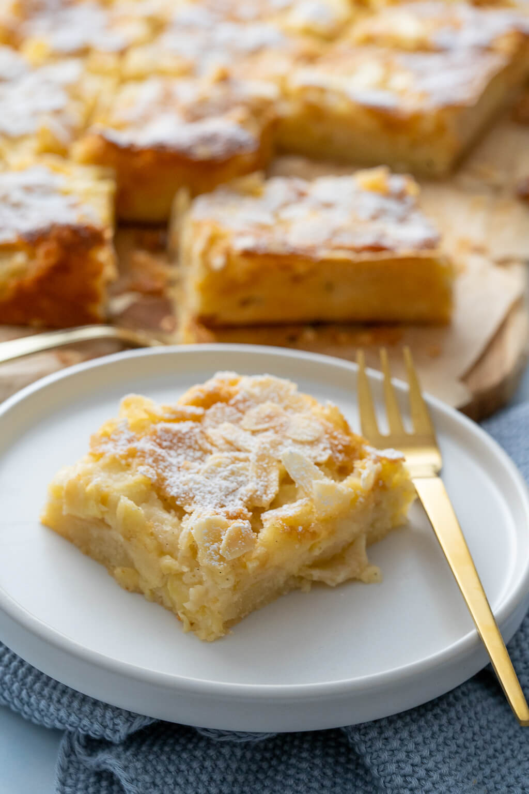

Applepie

Description
The following recipe is very easy to follow and a delicious result is guaranteed. It is for all the applepie lovers who are lazy bakers.
Ingredients
For the dough:
- 13 Tablespoons (Ts) Oil
- 13 Ts Milk
- 13 Ts Sugar
- 13 Ts Flour
- 2 Teespoons Bakingpowder
- 2 Eggs
For the filling:
- 5 Apples
- Handfull of Wallnuts
- 3 Ts of Apricotjam
- Butter to grease the bakingdish
- Some Powdered Sugar for decorating
Steps:
Preperation:
- Remove the appleskin, core the apples and cut in small pieces.
- Chop up the wallnuts.
- Grease the baking dish and put a thin layer of flour inside.
- Heat up the oven to 180°C.
The dough:
- Mix all the ingredients listed for the dough.
- When the dough is well mixed, fill half of it in the backingdish.
Finishing:
- Fill the cut apples on top of the dough inside the baking dish.
- Sprinkle the chopped wallnuts on top.
- Spread the Apricotjam evenly over the mix.
- Lastly pour the other half of the dough on top of everything and put in the oven for 50 Minutes.
When the pie is finished it can be decorated with the powdered sugar and is best served with vanilla ice.
Enjoy!
Return to main page